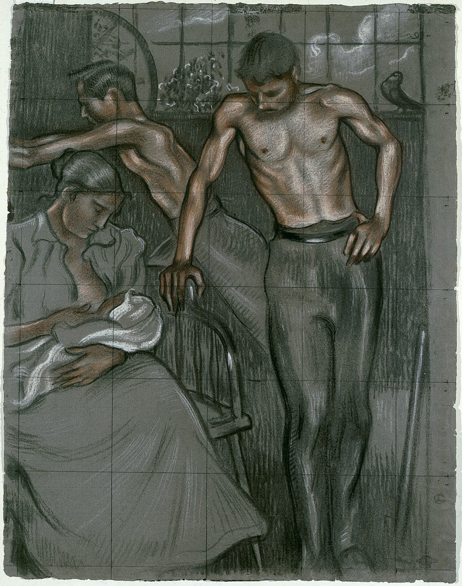

**Georges Lemmen**
*Famille ouvrière*
MRBAB, inv. 7777 Ce dessin, daté du ***20 juin 97*** en haut à droite, représente une famille ouvrière. À gauche, une mère nourrit son enfant, tandis qu'un homme au torse nu s'appuie sur la chaise sur laquelle elle est assise. En arrière-plan, le même personnage masculin est représenté au travail, tournant une roue. Georges Lemmen a choisi pour ce dessin la technique des trois crayons, une combinaison de pierre noire, de craie blanche et de sanguine rouge-brun. Tandis que la couleur du papier sert de demi-teinte, les zones sombres sont indiquées à la pierre noire, la sanguine est utilisée pour les carnations et les zones claires sont rehaussées de craie blanche. Grâce à cette technique, Lemmen crée un jeu subtil de lumière et de volume. Une **grille** est visible sur l'ensemble de la composition, ce qui nous laisse penser qu'il s'agit du dessin définitif, prêt à être reporté. Le dessin était en effet destiné à un projet (peut-être jamais réalisé) de carte de membre pour la Maison du Peuple de Bruxelles, dont le bâtiment avait été conçu par Victor Horta. Un autre dessin préparatoire pour cette composition, daté d'un jour plus tôt (*19.IX.97*), est récemment entré dans la collection des Musées royaux des Beaux-Arts de Belgique. Cette étude de figure retrace les recherches de l'artiste pour trouver la posture finale du personnage masculin. La feuille présente également, à droite, une esquisse de la carte de membre elle-même, qui montre comment le dessin final devait apparaître, à gauche des coordonnées du membre. La colombe que l'on voit en haut à droite du dessin final est également visible ici.

Georges Lemmen
Étude pour une carte de membre de la Maison du Peuple de Bruxelles
MRBAB, inv. 12849
*Crédits photos : © MRBAB, Bruxelles / photo : J. Geleyns - Art Photography*
*Famille ouvrière*
MRBAB, inv. 7777 Ce dessin, daté du ***20 juin 97*** en haut à droite, représente une famille ouvrière. À gauche, une mère nourrit son enfant, tandis qu'un homme au torse nu s'appuie sur la chaise sur laquelle elle est assise. En arrière-plan, le même personnage masculin est représenté au travail, tournant une roue. Georges Lemmen a choisi pour ce dessin la technique des trois crayons, une combinaison de pierre noire, de craie blanche et de sanguine rouge-brun. Tandis que la couleur du papier sert de demi-teinte, les zones sombres sont indiquées à la pierre noire, la sanguine est utilisée pour les carnations et les zones claires sont rehaussées de craie blanche. Grâce à cette technique, Lemmen crée un jeu subtil de lumière et de volume. Une **grille** est visible sur l'ensemble de la composition, ce qui nous laisse penser qu'il s'agit du dessin définitif, prêt à être reporté. Le dessin était en effet destiné à un projet (peut-être jamais réalisé) de carte de membre pour la Maison du Peuple de Bruxelles, dont le bâtiment avait été conçu par Victor Horta. Un autre dessin préparatoire pour cette composition, daté d'un jour plus tôt (*19.IX.97*), est récemment entré dans la collection des Musées royaux des Beaux-Arts de Belgique. Cette étude de figure retrace les recherches de l'artiste pour trouver la posture finale du personnage masculin. La feuille présente également, à droite, une esquisse de la carte de membre elle-même, qui montre comment le dessin final devait apparaître, à gauche des coordonnées du membre. La colombe que l'on voit en haut à droite du dessin final est également visible ici.
Étude pour une carte de membre de la Maison du Peuple de Bruxelles
MRBAB, inv. 12849
Design et développement web Marie-Noëlle Grison & Robert G. Erdmann